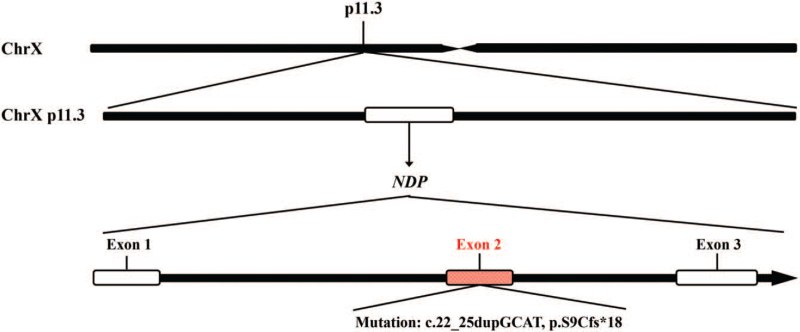
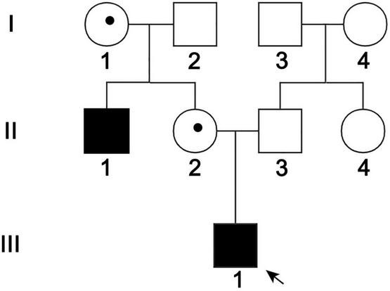
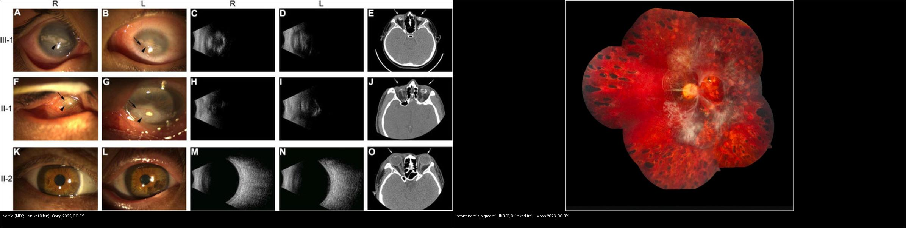
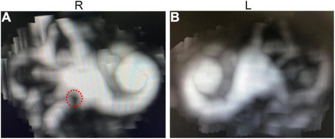
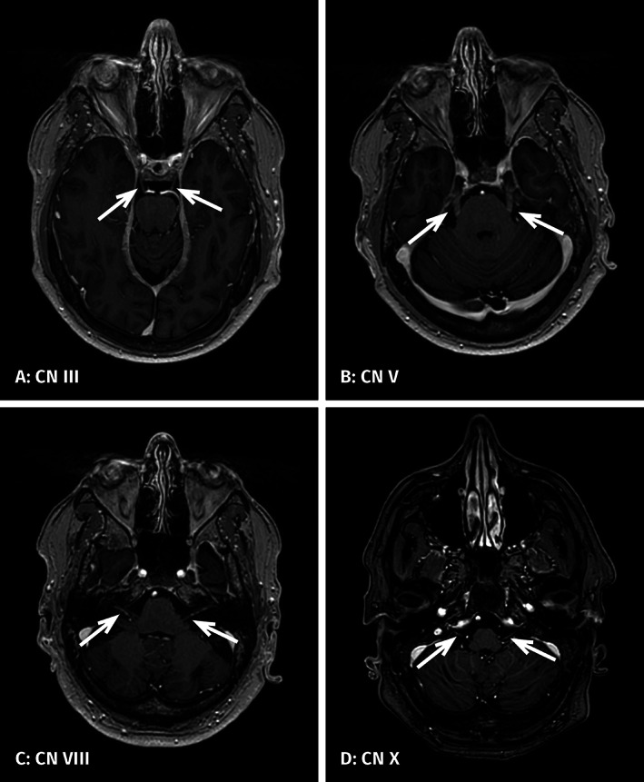
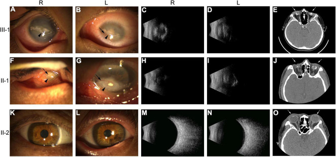
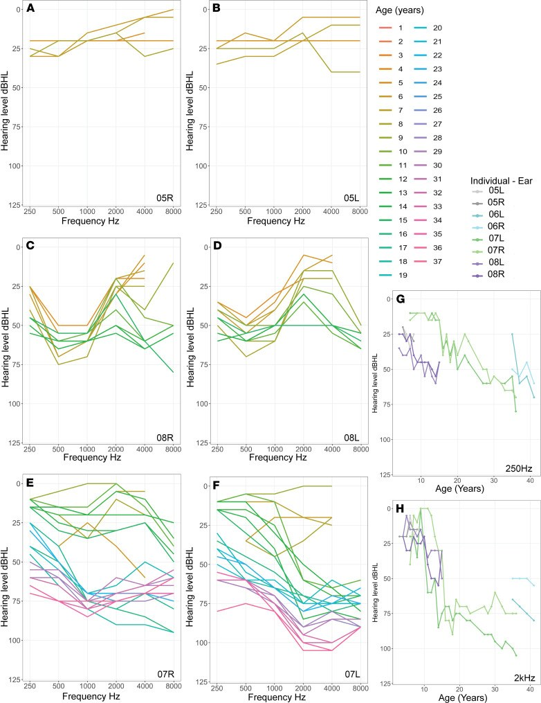
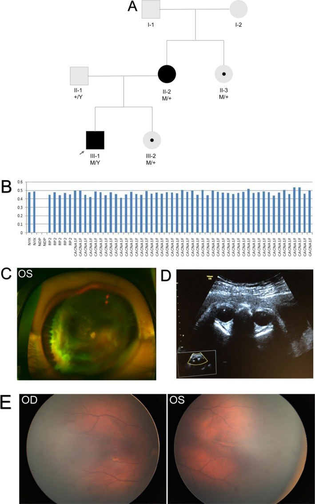
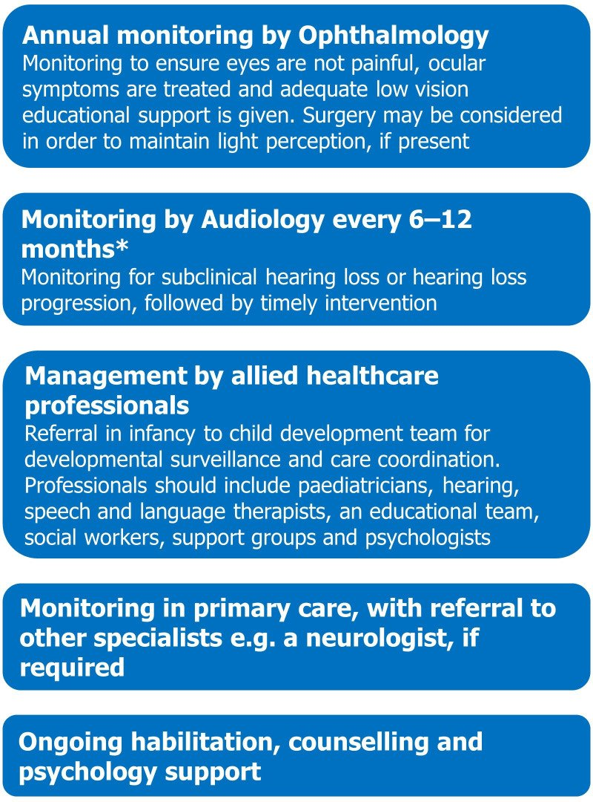
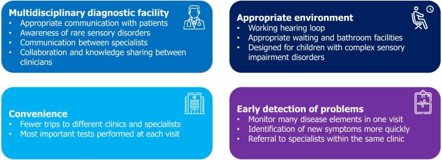

467 — Norrie: tư vấn di truyền X-linked, chẩn đoán trước sinh & theo dõi điếc–phát triển / Norrie disease: X-linked genetic counselling, prenatal diagnosis & hearing–development surveillance
Tags: pattern:gia-rop pattern:di-truyen-X pattern:bong-vong-mac vung:vong-mac vung:tai-trong protocol:tu-van-di-truyen protocol:chan-doan-truoc-sinh protocol:audiometry
Mức chắc chắn (certainty): tổng hợp y văn (literature synthesis) — tổng hợp từ y văn mở 2019–2026 (Medicine CC BY; Front Aging Neurosci CC BY; Mol Genet Genomic Med CC BY; JCI Insight CC BY; Ann Neurol CC BY-NC; BMJ Paediatr Open CC BY-NC; Front Med CC BY); có gắn hình thái ca nguyên văn từ bài gốc nhưng nội dung nhóm tự biên.
1. Tổng quan bệnh học – cơ chế hình ảnh
- Bệnh học (pathology): Norrie disease (ND) là rối loạn di truyền hiếm, liên kết X lặn (X-linked recessive; OMIM 310600), do đột biến gen NDP ở Xp11.3 mã hóa norrin (Norrin cystine knot growth factor). Norrin do tế bào Müller võng mạc tiết ra, hoạt hóa đường tín hiệu Wnt chính tắc (canonical Wnt/β-catenin) qua phức hợp thụ thể FZD4–LRP5–TSPAN12 → điều khiển sự hình thành mao mạch trong võng mạc. Mất chức năng norrin → mạch máu võng mạc KHÔNG mọc hết ra ngoại vi → giảm mạch máu võng mạc (retinal hypovascularization) → mù bẩm sinh (do loạn sản võng mạc hai bên / bong võng mạc). Vì cùng một gen, NDP còn gây FEVR liên kết X (nhẹ hơn, chỉ ở mắt) — Norrie là đầu nặng nhất của cùng phổ.
- Tại sao có ảnh hưởng ngoài mắt — cơ chế "ống mạch máu chung": norrin/Wnt cũng điều hòa mạch máu tai trong (stria vascularis) và thần kinh trung ương. Ở ốc tai, bệnh lý mạch máu ốc tai xuất hiện TRƯỚC khi mất thính lực (rối loạn hàng rào máu–mê lộ → giảm điện thế nội dịch → tổn thương tế bào lông), trong khi tế bào hạch xoắn ốc (spiral ganglion cells) còn bảo tồn → đây là cơ sở sinh lý cho ốc tai điện tử (cochlear implant) hoạt động được về lý thuyết. Trên MRI, thấy phù nội dịch (endolymphatic hydrops) và ngấm thuốc đa dây thần kinh sọ (III, V, VIII, X).
- TẠI SAO thấy được trên ảnh (vật lý, mô bệnh):
- Chụp mạch huỳnh quang (FFA/WFFA): vùng võng mạc vô mạch KHÔNG ngấm thuốc (không có mạch dẫn thuốc, hàng rào máu–võng mạc còn nguyên) → tối; tân mạch rò thuốc → sáng muộn (thoát thuốc).
- Siêu âm B-scan: bong võng mạc dạng phễu (funnel) — dải tăng echo; khối xơ–mạch sau thủy tinh thể ("retrolental fibrovascular tissue").
- CT/US (thai–nhũ nhi): nhãn cầu nhỏ (microphthalmos), khối sau thủy tinh thể, canxi hóa (nếu có phải loại trừ retinoblastoma — bài 412).
- Audiometry: mất thính lực thần kinh giác quan tần số CAO trước, kiểu "thuyền" (boat-shaped ABR), có thể bất đối xứng, tiến triển theo tuổi.
- Ngưỡng định lượng & dịch tễ (theo nguồn):
- Tần suất ~1:100.000 trẻ sinh sống (Cao Front Med 2026, PMC13070777).
- > 200 đột biến gây bệnh ở NDP (Cao 2026); có thể di truyền từ mẹ mang gen hoặc đột biến mới (de novo) (Wang Medicine 2022, PMC8735801; đột biến c.22_25dupGCAT dị hợp tử thể mới).
- Mất thính lực thần kinh giác quan tiến triển ~30–50% các ca (Cao 2026); khởi phát thính lực xấu đi từ 5 tuổi, muộn tới 48 tuổi (Bryant JCI Insight 2022, PMC8855802) — thường phát hiện ở thập niên thứ hai (Sowden BMJ Paediatr Open 2020, PMC7670942).
- Chẩm đoán muộn rất muộn: nhiều trẻ đã bong võng mạc toàn bộ khi khám lần đầu (bài 457: 82% mắt stage 5 ở tuổi trung vị 2,5 tháng).

Sơ đồ gen NDP (vị trí, cấu trúc exon) và protein norrin được mã hóa — norrin là yếu tố dinh dưỡng mạch máu cho võng mạc. Đột biến NDP → mạch võng mạc không mọc tới ngoại vi → mù bẩm sinh. Nguồn: Wang H et al., Medicine 2022, PMC8735801 Fig. 1, CC BY 4.0.2. Mẫu hình + chẩn đoán phân biệt theo KIỂU DI TRUYỀN (Gamut)
- Mẫu hình cửa vào: trẻ TRAI, đủ tháng, mù/leukocoria hai bên từ lúc sinh, có thể chậm phát triển trí tuệ/co giật, gia đình có nam giới mù + điếc; đáy mắt: khối loạn sản võng mạc dạng "pumpkin" vàng cam + bong võng mạc; siêu âm B-scan dạng phễu.
- Phân nhóm theo cơ chế di truyền (thứ tự phải loại trừ):
- X-linked LẶN (chỉ nam mắc; mẹ mang gen thường bình thường): Norrie (NDP); FEVR do NDP (nhẹ hơn).
- X-linked TRỘI (gần như chỉ nữ; gây chết bào thai nam): incontinentia pigmenti (IKBKG) — da, răng, tóc, TKTW.
- Trội/lặn NST thường: FEVR (FZD4, LRP5, TSPAN12, CTNNB1, KIF11); Coats plus (CTC1, lặn) khi hai bên + bệnh hệ thống.
- Không di truyền: Coats (giãn mạch–xuất tiết, thường một bên, trai), viêm (toxocara), chấn thương.
- KHỐI U — loại trừ TRƯỚC: retinoblastoma (canxi hóa thô, < 5 tuổi, RB1).
- Gợi nhớ khi nam mù + điếc: "NORRIE" — Nam giới · Ocular (mù bẩm sinh hai bên) · Retinal detachment (dạng phễu) · Recessive, X-linked · Inner-ear (điếc thần kinh tiến triển) · Extra-neural (chậm phát triển/co giật) → xét gen NDP, tầm soát cả mẹ.

Phả hệ Norrie: mũi tên đen = ca chỉ điểm (propositus); II-1 và III-1 là nam bệnh, I-1 và II-2 là nữ MANG GEN (heterozygous carrier), các thành viên khác bình thường. Đây là kiểu X-linked lặn — minh họa 50% nam mắc, 50% nữ mang gen khi mẹ mang gen. Nguồn: Gong Y et al., Front Aging Neurosci 2022, PMC9062296 Fig. 1, CC BY 4.0.3. Bảng so sánh phân biệt (ma trận đối chiếu)
| Thực thể (entity) | Di truyền / gen | Chốt vào (rule-in) | Chốt loại (rule-out) | Gợi ý xác nhận |
|---|---|---|---|---|
| Norrie (NDP) | X-linked lặn, NDP Xp11.3 | Nam, đủ tháng, mù bẩm sinh hai bên + điếc tiến triển + chậm phát triển | Trẻ nữ đơn độc + da/răng (→ IP); FEVR nhẹ một mắt | Xét gen NDP (NGS/exome; MLPA nếu nghi mất đoạn); audiometry; MRI não/nội tai |
| FEVR do NDP (thể nhẹ) | X-linked (cùng gen) | Vô mạch ngoại vi trên FA hai bên, không điếc/không chậm phát triển | Điếc + chậm phát triển + bong toàn bộ → Norrie | WFFA + NDP; tầm soát gia đình |
| Incontinentia pigmenti (IKBKG) | X-linked TRỘI, IKBKG (NEMO) | Bé GÁI + tổn thương da vệt xoáy + răng/tóc dị dạng + WFFA bất thường | Nam (gần như không gặp; nếu có, nghi bất thường NST) | WFFA 1–3 tháng đầu; gen IKBKG |
| Coats plus (CTC1) | Lặn NST thường | Coats-like HAI BÊN + vôi hóa/nang não + loãng xương/chảy máu tiêu hóa | Một mắt, không bệnh hệ thống → Coats | Gen CTC1; MRI não; nội soi tiêu hóa (bài 465) |
| Retinoblastoma (loại trừ trước) | RB1 (di truyền/không) | Canxi hóa THÔ trong khối, < 5 tuổi | Bong võng mạc + không canxi + giãn mạch/xuất tiết → Coats/giả ROP | MRI sọ–hốc mắt + hội chẩn ung thư nhi trước can thiệp |

Trái: Norrie — đáy mắt/tổn thương mắt của nam bệnh và dịch kính của nữ mang gen (một gia đình NDP), di truyền X-linked lặn. Phải: incontinentia pigmenti — bong võng mạc co kéo, di truyền X-linked trội. Cùng "con đường cuối" nhưng khác kiểu di truyền, khác tư vấn gia đình. Nguồn: Gong Y et al., Front Aging Neurosci 2022 (PMC9062296) Fig. 2, CC BY 4.0 + Moon JY et al., Ophthalmol Sci 2026 (PMC13425831) Fig. 2, CC BY 4.0; ảnh ghép letterbox, giữ nguyên bản.4. Protocol: tư vấn di truyền, chẩn đoán trước sinh & theo dõi
- Xác nhận chẩn đoán & tìm đột biến:
- Xét nghiệm gen NDP (NGS/exome) khi có bong võng mạc hai bên ở trẻ trai đủ tháng (đặc biệt kèm điếc/chậm phát triển). Nếu giải trình tự không phát hiện → dùng MLPA/qPCR tìm mất đoạn lớn (đã gặp mất đoạn lớn nhiều exon, vd mất đoạn lớn NDP — Gong 2022; mất exon 2–3 — Liu 2019).
- Phân độ mắt: dùng bảng Norrie cải tiến từ FEVR + ICROP3 (bài 457) — stage 4 còn giá trị can thiệp; stage 5 tiên lượng rất xấu.
- Tư vấn di truyền (genetic counselling) — các con số phải nói rõ:
- Nếu mẹ là người mang gen (carrier): mỗi con TRAI 50% mắc bệnh, mỗi con GÁI 50% mang gen.
- Mẹ mang gen thường KHÔNG có biểu hiện (kiểu hình bình thường) — nhưng đáy mắt/FA có thể có vô mạch ngoại vi kín đáo → khám mẹ.
- Đột biến mới (de novo) vẫn xảy ra (Wang 2022) → có thể con đầu mắc nhưng mẹ không mang gen; nguy cơ tái phát khi đó thấp nhưng không bằng 0 (khảm tuyến sinh dục).
- Chẩn đoán trước sinh (prenatal) & trước làm tổ (PGD):
- Lấy dịch ối/chọc gai nhau (amniocentesis/CVS) để tìm đột biến NDP đã biết trong gia đình — đây là phương pháp chốt (Liu 2019: ca 1 thai nhi không mang đột biến → thai bình thường; ca 3 thai nhi NỮ mang mất đoạn exon 2–3 → vẫn sinh bình thường vì là người mang gen).
- Siêu âm thai có thể thấy nhãn cầu đối xứng, thủy tinh thể trong, dịch kính sáng (bình thường) hoặc bất thường — nhưng siêu âm bình thường KHÔNG loại trừ (case 3: thai mang gen, siêu âm bình thường).
- Chẩn đoán di truyền trước làm tổ (PGD) để chặn truyền gen giữa các thế hệ (Gong 2022).
- Theo dõi thính lực – phát triển – hỗ trợ (safety-net suốt đời):
- Audiometry sớm ngay sau chẩn đoán + định kỳ (đo cả mất thính lực dưới ngưỡng), vì thính lực xấu đi âm thầm từ 5 tuổi tới 48 tuổi.
- Máy trợ thính / dụng cụ xúc giác-rung (vibro-tactile); ốc tai điện tử (cochlear implant) — nhiều bệnh nhân dùng và cho kết quả tích cực, cơ sở sinh lý vì tế bào hạch xoắn ốc còn bảo tồn.
- Theo dõi phát triển – thần kinh: chậm phát triển, co giật, vấn đề tâm lý/hành vi; phòng khám đôi giác quan (Dual Sensory clinic) giảm số buổi hẹn và cải thiện phối hợp chăm sóc.
- Điều trị mắt: không có điều trị phục hồi mù bẩm sinh; can thiệp nhằm bảo tồn chút thị lực còn lại (laser/mổ ở stage 4). Gene therapy (AAV-norrin) đang tiền lâm sàng (Dillinger Mol Ther Adv 2026, PMC13355717).
flowchart TD
A[Tre trai du thang: mu/leukocoria HAI BEN] --> B{Co diec tien trien / cham phat trien / gia dinh nam mu-diec?}
B -->|Co| C[Nghi Norrie - xet gen NDP]
B -->|Khong| D[Gamut gia ROP: FEVR/IP/Coats/PHPV - bai 457]
C --> E[Loai tru retinoblastoma truoc: MRI so-hoc mat]
E --> F[NGS/exome NDP; neu am -> MLPA tim mat doan lon]
F --> G{Xac dinh nguoi mang gen}
G -->|Me mang gen| H[Tu van: con trai 50% mac, con gai 50% mang gen]
G -->|De novo| I[Tu van nguy co tai phat thap nhung khong bang 0]
H --> J[Chan doan truoc sinh: CVS/dich oi tim dot bien + sieu am thai]
I --> J
J --> K[Theo doi: audiometry dinh ky + phat trien/co giat + phong kham doi giac quan]
K --> L[Ho tro: may tro thinh / oc tai dien tu; can thiep mat bao ton thi luc]
5. Biến thể bình thường và cạm bẫy
- Mẹ mang gen "trông bình thường": người nữ mang gen NDP thường không có triệu chứng, nhưng có thể có vô mạch ngoại vi kín đáo trên FA — đáy mắt bình thường KHÔNG loại trừ mang gen; phải xét gen mẹ.
- Siêu âm thai bình thường KHÔNG loại trừ Norrie: thai nhi có thể mang đột biến (nhất là thai nữ mang gen) mà siêu âm hoàn toàn bình thường → kết luận phải dựa vào xét nghiệm gen, không dựa vào hình ảnh thai.
- Nhầm "ROP": Norrie xảy ra ở trẻ ĐỦ tháng — gọi "ROP" ở trẻ không sinh non là bỏ sót bệnh di truyền + bỏ sót tầm soát gia đình + bỏ sót retinoblastoma.
- Bỏ sót phần ngoài mắt: khám mắt xong dừng lại → bỏ sót điếc (thứ bệnh nhân sợ mất nhất sau khi đã mù) và chậm phát triển/co giật; cần audiometry + theo dõi phát triển ngay.
- Tiên lượng "muộn không cứu": phần lớn trẻ đã stage 5 khi chẩn đoán → giá trị lớn nhất của chẩn đoán sớm nằm ở TƯ VẤN DI TRUYỀN & chẩn đoán trước sinh, hơn là cứu thị lực của trẻ bệnh.
- Đừng quên canxi hóa: bất kỳ khối trong nhãn cầu ở trẻ nhỏ có canxi hóa thô phải loại trừ retinoblastoma trước mọi can thiệp (bài 412).

MIP MRI sau tiêm gadolinium: vòng tròn đỏ = túi nhỏ tiền đình (saccule) căng giãn (phù nội dịch) ở cả hai tai — biểu hiện bệnh lý tai trong của Norrie. Nguồn: Gong Y et al., Front Aging Neurosci 2022, PMC9062296 Fig. 4, CC BY 4.0.
Ngấm thuốc gadolinium các dây thần kinh sọ III, V, VIII và X trên T1W — biểu hiện thần kinh ngoài mắt của Norrie (nhấn mạnh: đó là bệnh hệ thống có bệnh lý mạch máu–hàng rào, không chỉ ở mắt). Nguồn: Jokela M et al., Ann Neurol 2022, PMC9299797 Fig. 1, CC BY-NC 4.0.6. Tự lượng giá — Blind Quiz
Ca 1 — Trẻ trai đủ tháng, phả hệ có hai nam mù; mẹ không triệu chứng. Kết quả giải trình tự gen:
NDP: biến thể mất đoạn — gen vắng trên nhiễm sắc thể X của mẹ.
- Hỏi: kiểu di truyền? Nguy cơ cho con trai/con gái tiếp theo? Bước tiếp theo cho thai kỳ sau?
Bấm để hiện đáp án (findings + chẩn đoán)
- Chẩn đoán (diagnosis): Norrie disease — mẹ là người mang gen (carrier).
- Tư vấn: mỗi con trai 50% mắc; mỗi con gái 50% mang gen. For next pregnancy: chẩn đoán trước sinh bằng chọc ối/CVS tìm đột biến NDP, hoặc PGD.
- Cơ chế: Norrin–Wnt mất chức năng → mạch võng mạc không mọc ra ngoại vi → mù bẩm sinh; tế bào hạch xoắn ốc còn bảo tồn → tiềm năng ốc tai điện tử.
- Nguồn hình: Gong Y et al., Front Aging Neurosci 2022, PMC9062296; Liu J et al., Mol Genet Genomic Med 2019, PMC6382493.
Ca 2 — Phả hệ và đáy mắt của gia đình Norrie (nữ mang gen vs nam bệnh):

- Hỏi: mắt nào là người bệnh, mắt nào là người mang gen? Vì sao phải khám mẹ?
Bấm để hiện đáp án (findings + chẩn đoán)
- Dấu hiệu (findings): người bệnh (nam): tân mạch, keratoleukoma, dịch kính đục nặng, CT nhãn cầu; người mang gen (nữ): có thể có bất thường nhẹ (mũi tên = tân mạch; đầu mũi tên = keratoleukoma) nhưng phần lớn không triệu chứng.
- Chẩn đoán: Norrie X-linked lặn — mẹ mang gen vẫn cần khám lại + xét gen vì "bình thường lâm sàng" không loại trừ.
- Nguồn ảnh: Gong Y et al., Front Aging Neurosci 2022, PMC9062296 Fig. 2, CC BY 4.0.
Ca 3 — Theo dõi thính lực ở nhiều bệnh nhân Norrie:

- Hỏi: mất thính lực bắt đầu ở tần số nào? Khi nào bắt đầu? Vì sao cần theo dõi cả đời?
Bấm để hiện đáp án (findings + chẩn đoán)
- Dấu hiệu (findings): mất thính lực tần số CAO trước, khởi phát rất sớm và tiến triển; mức độ có thể nhẹ–bất đối xứng; ABR thường "boat-shaped".
- Chẩn đoán: điếc thần kinh giác quan tiến triển do Norrie, khởi phát từ 5 tuổi, muộn tới 48 tuổi; bệnh lý mạch máu ốc tai xuất hiện TRƯỚC mất thính lực → cửa sổ can thiệp sớm.
- Nguồn ảnh: Bryant D et al., JCI Insight 2022, PMC8855802 Fig. 1, CC BY 4.0.
Ca 4 — Chẩn đoán trước sinh: phả hệ + mất đoạn gen ở thai nhi:

- Hỏi: làm sao khẳng định thai nhi có mắc bệnh? Siêu âm thai bình thường có loại trừ được không? Vì sao thai nữ mang đột biến vẫn sinh bình thường?
Bấm để hiện đáp án (findings + chẩn đoán)
- Dấu hiệu (findings): phả hệ gia đình 3 + phát hiện mất đoạn hai exon trên gen NDP; siêu âm thai cho thấy nhãn cầu đối xứng, thủy tinh thể trong.
- Chẩn đoán: thai nhi mang mất đoạn NDP — nhưng là thai NỮ → người mang gen, kiểu hình thường bình thường → sinh bình thường. Siêu âm bình thường KHÔNG loại trừ; phải xác nhận bằng xét nghiệm gen.
- Nguồn ảnh: Liu J et al., Mol Genet Genomic Med 2019, PMC6382493 Fig. 3, CC BY 4.0.
Ca 5 — Lộ trình chẩn đoán & theo dõi Norrie (quản lý đa chuyên khoa):

- Hỏi: liệt kê các mục theo dõi thiết yếu ngoài mắt; khi nào cần phòng khám đôi giác quan?
Bấm để hiện đáp án (findings + chẩn đoán)
- Dấu hiệu/nội dung: lộ trình gồm đánh giá thính lực (kể cả mất dưới ngưỡng), thần kinh/phát triển, co giật, tâm lý–hành vi, hỗ trợ máy trợ thính/ốc tai điện tử.
- Ý nghĩa: cần theo dõi suốt đời; phòng khám đôi giác quan (Dual Sensory clinic) phối hợp mắt–tai–phát triển, giảm gánh nặng đi lại, cải thiện chăm sóc — nhất là khi điếc tiến triển trên nền đã mù.
- Nguồn ảnh: Sowden JC et al., BMJ Paediatr Open 2020, PMC7670942 Fig. 4, CC BY-NC 4.0.
Lợi ích của phòng khám đôi giác quan:

Sơ đồ tổng hợp lợi ích của Dual Sensory clinics cho bệnh nhân Norrie: phối hợp đa chuyên khoa, giảm số buổi hẹn/di chuyển, hỗ trợ tâm lý xã hội. Nguồn: Sowden JC et al., BMJ Paediatr Open 2020, PMC7670942 Fig. 5, CC BY-NC 4.0.Bài liên quan chéo
- 400 – Tổng quan Mắt & thị giác
- 457 – Bệnh "giả ROP" ở trẻ đủ tháng: FEVR, Norrie, incontinentia pigmenti & Coats (chẩn đoán/hình ảnh Norrie)
- 456 – Bệnh võng mạc trẻ sinh non (ROP) (phân biệt: sinh non vs đủ tháng)
- 412 – U trong nhãn cầu (retinoblastoma — loại trừ trước)
- 465 – Coats plus (CTC1): Coats-like hai bên + vôi hóa/nang não
- 439 – Teo thị di truyền: DOA/OPA1 & Wolfram (bệnh di truyền mắt–thần kinh khác)
- 437 – Teo thị kèm ĐIẾC: DOA+/OPA1 & WFS1 trội (mù + điếc không do NDP)
Ảnh
- Tên file:
467_norrie_<nội dung>_<PMCID>-Fig<n>-<License>.jpg; nguồn + giấy phép từng ảnh trongimages/CREDITS.md. - Ảnh CC BY-NC (PMC9299797, PMC7670942) và CC BY giữ nguyên bản; ảnh ghép chỉ dùng nguồn cho phép tạo tác phẩm phái sinh (CC BY) — letterbox, giữ nguyên bản.
Không dùng để chẩn đoán độc lập khi chưa có người hướng dẫn.